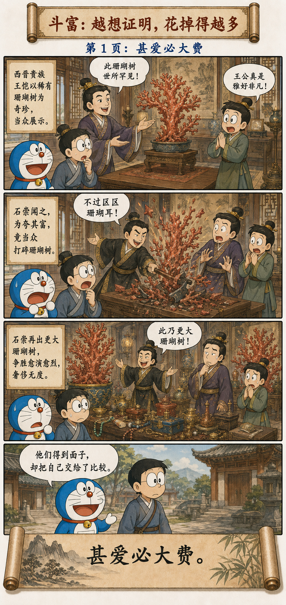
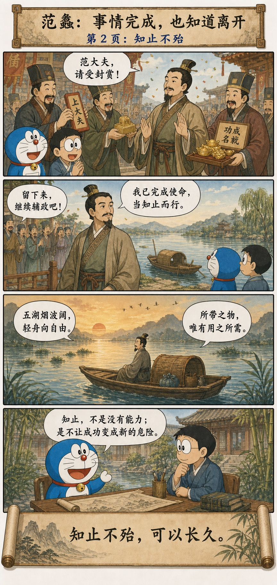
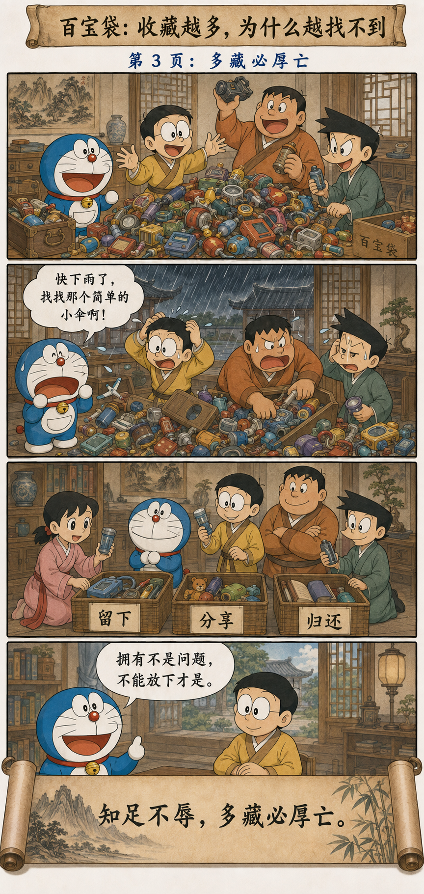

名、货与生命，哪一个更亲近
Reputation, Goods, and Life: Which Is Closest?
名与身孰亲？
身与货孰多？
得与亡孰病？
甚爱必大费，多藏必厚亡。
故知足不辱，知止不殆，
可以长久。
Which is dearer, reputation or life? Which is more valuable, life or possessions? Which is more harmful, gain or loss? Excessive attachment brings great expense; excessive hoarding brings heavy loss. Therefore, knowing enough avoids disgrace, and knowing when to stop avoids danger. In this way one may endure.
老子问的不是“要不要成功”，而是“成功要付到什么程度”
The Question Is Not Whether to Succeed, but What Success Is Allowed to Cost
名声、财富和成果都可以有价值。问题是，当它们与身体、时间、关系和判断发生冲突时，我们是否还记得什么是目的，什么只是工具。
Reputation, wealth, and achievement can all matter. The question is whether, when they conflict with health, time, relationships, and judgment, we still remember what is the purpose and what is merely a tool.
“甚爱必大费”说的不是认真必有代价，而是执著会让代价失去上限；“多藏必厚亡”也不是拥有越少越高尚，而是每一项积累都需要维护、保卫和继续证明，最后可能压垮承载它的人。
“Excessive attachment brings great expense” does not mean commitment is wrong; it means obsession removes the upper limit on cost. “Excessive hoarding brings heavy loss” does not glorify poverty; every accumulation demands maintenance, defense, and renewed proof until it may crush the person carrying it.
斗富、离舟与塞满的百宝袋
Competitive Luxury, a Departing Boat, and an Overfilled Pocket



珊瑚树越大，比较的尽头却越远
Shi Chong and Wang Kai: The Larger the Coral, the More Distant the Finish
晋代石崇与王恺斗富的故事，后来成为奢侈竞争的典型。王恺展示罕见珊瑚树，石崇把它打碎，随即拿出更多、更大的珊瑚供他挑选。
The Jin-era contest of luxury between Shi Chong and Wang Kai became a classic image of competitive extravagance. Wang Kai displayed a rare coral tree; Shi Chong smashed it and immediately produced several larger corals from which Wang could choose.
石崇赢了这一局，却没有结束这场游戏。只要价值来自“必须比别人更多”，任何拥有都会立刻制造下一次不足。昂贵的不只是珊瑚，而是从此每一件东西都要承担证明身份的任务。
Shi Chong won the round without ending the game. When worth depends on possessing more than others, every possession immediately creates the next insufficiency. The true expense is not only coral; every object must now perform the work of proving identity.
功成之后，仍有选择离开的自由
Fan Li: After Success, the Freedom to Leave Remains
越国复兴以后，范蠡没有把已有功名当成必须终身守住的位置。《国语》记他“乘轻舟以浮于五湖”，从已经完成的事业中抽身。
After Yue’s restoration, Fan Li did not treat achievement and honor as a position that had to be defended forever. The Discourses of the States records that he took a light boat and floated upon the Five Lakes, withdrawing from a completed undertaking.
这里的重点不是逃离，也不是把功名看成污秽，而是完成一段任务以后仍能重新判断：继续留下是否服务于更长远的生命？知止让人保留选择，不必被昨天的成功锁在原地。
The point is neither flight nor contempt for honor. It is the ability, after completing one task, to ask again whether remaining serves a longer life. Knowing when to stop preserves choice and prevents yesterday’s success from locking us in place.
东西越多，找到有用之物反而越难
The More Things We Keep, the Harder It Is to Find What Works
百宝袋的价值不在道具数量，而在需要时能拿出合适的一个。若收藏、重复和舍不得整理把入口塞满，再神奇的道具也会变成噪声。
The value of the four-dimensional pocket is not the number of gadgets, but the ability to produce the right one when needed. If collecting, duplication, and reluctance to sort block the entrance, even magical tools become noise.
“留下、分享、归还”不是把丰富变贫乏，而是恢复使用的秩序。真正的拥有包含管理与放手的能力；否则，收藏越厚，失去功能时的损失也越厚。
Keeping, sharing, and returning do not turn abundance into deprivation. They restore an order of use. Genuine ownership includes the ability to manage and release; otherwise, the thicker the collection, the heavier the loss when function disappears.
先辨亲疏，再算得失
First Rank What Matters; Then Calculate Gain and Loss
一个回答“够不够”，一个回答“还要不要继续”
One Asks What Is Enough; the Other Whether to Continue
知足是一把内部尺度：达到什么条件，需求已经被满足？知止则是一项动态判断：再向前一步的边际收益，是否仍高于它对身体、时间、关系和未来选择造成的代价？
Knowing enough provides an internal measure: under what conditions is the need satisfied? Knowing when to stop is a dynamic judgment: does the marginal gain from one more step still exceed its cost to health, time, relationships, and future options?
所以知止并不与雄心冲突。真正长远的目标尤其需要止损、休整与阶段退出。放弃一个低价值的局部胜负，可能正是保护全局最优。
Knowing when to stop does not conflict with ambition. Long-term goals especially require limits, recovery, and staged withdrawal. Giving up a low-value local victory may protect the global optimum.
知足不是不求进步，知止也不是半途而废
Enough Is Not Stagnation, and Stopping Is Not Quitting
不再用无止境的比较驱动自己，不等于停止学习；拒绝一个代价失控的项目，也不等于缺少坚持。关键是：行动还在服务你认可的目标，还是只在维护不肯认输的自我形象？
Refusing endless comparison does not mean ceasing to learn. Leaving a project whose costs have escaped control does not mean lacking persistence. Ask whether action still serves a valued purpose or merely protects an image that cannot admit defeat.
让成果进入生命，不要让生命住进成果里
Let Achievement Enter Life; Do Not Make Life Live Inside Achievement
第四十四章不是劝人离开世界，而是恢复价值的次序。名与货可以使用，可以欣赏，也可以追求；但当它们要求你赔上全部生命时，要有能力说：到这里已经够了。
Chapter 44 does not ask us to leave the world. It restores an order of value. Reputation and goods may be used, enjoyed, and pursued; when they demand the whole of life, we must be able to say: this is enough.
我可以拥有成果，
但不必让成果拥有我。
I may possess achievement without being possessed by it.
原典与故事出处
Primary Texts and Story Sources
《道德经》第四十四章及历代注 · 《太平广记·奢侈一》 · 《国语·越语下》
Chapter 44 and traditional commentaries, the Extensive Records of the Taiping Era, and the Discourses of the States.